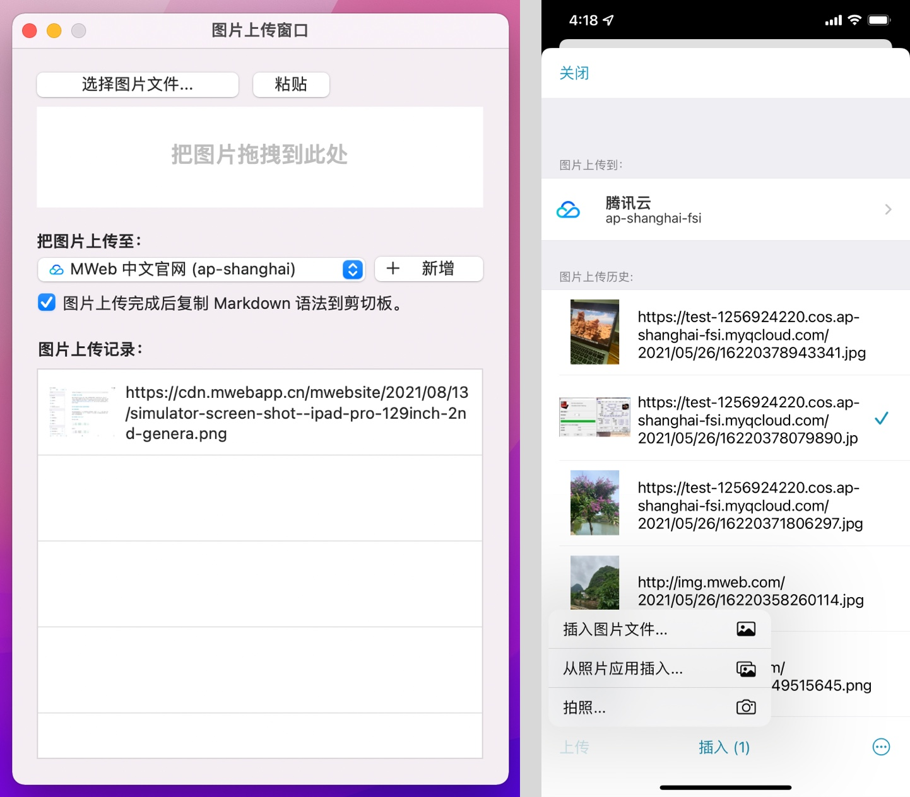
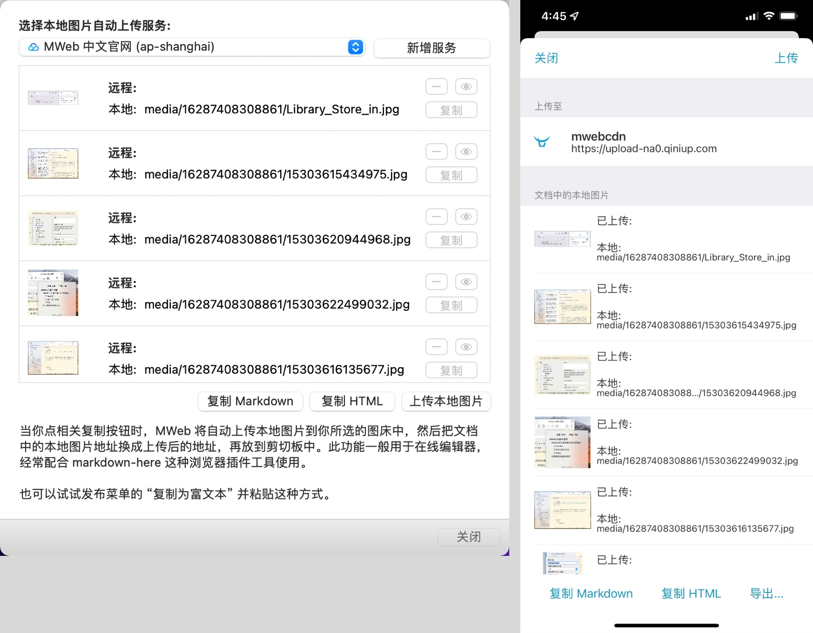

图片上传服务（图床）支持 Imgur、sm.ms、腾讯云、七牛云、又拍云、阿里云和自定义的图床服务。要使用图片上传服务，要先新增图片上传服务。在 macOS 版 MWeb 中，请在 偏好设置 - 发布服务 中新增图片上传服务；在 iPadOS/iOS 版 MWeb 中，请在 设置页 - 图片上传 中新增图片上传服务。而在 MWeb 中使用图片上传服务，有两种处理方式，下面分别介绍一下：
1. 先上传至图床，再复制 Markdown 语法到编辑器
增加了图片上传服务后，要使用先上传的方式，需要先打开图片上传窗口。在 macOS 版 MWeb 中，请使用菜单：视图 - 图片上传窗口 来打开，工具条上也有相关按钮；在 iPadOS/iOS 版 MWeb 中，请点击编辑器底部的 “...” 按钮，在出来的菜单中，选择 图片上传到...，也可以在工具条中点击相关按钮打开。图片上传窗口的界面如下图所示，使用方法很简单，看界面即可知道，就不再介绍了。

2. 插入图片时自动复制一份到文档所在的相对位置
这个是 MWeb 建议使用的方式，这个方式的好处是图片在本地并且跟 Markdown 文档相关联，不会造成图片丢失这种问题，MWeb 在编辑器中会直接显示本地图片，预览时也方便一点。MWeb 的文档库和外部文件夹模式插入图片时，默认都是使用这种方式，也就是会复制一份图片到文档所在的相对位置。
这种方式下，你只需要完成文档的编写即可，当需要把文档中的图片上传至图床并发布出去时，在 macOS 版的 MWeb 中，请使用菜单：发布 - 把本地图片传至图床；在 iPadOS/iOS 版 MWeb 中，请点击编辑器底部的 分享 按钮，并选择要上传至的图床。执行了操作之后，就会显示如下图的图片上传界面：

在这个界面中，中间的列表会列出文档中的所有本地图片（注意是文档中的），首先请选择要上传的图床，然后点 “上传本地图片” 按钮即可。当图片上传完成后，你可以选择使用 “复制 Markdown” 按钮或者 “复制 HTML” 按钮，看你需要什么样的格式。复制进来的就是已经把本地图片地址换成图床的远程地址后的内容。
其它详细介绍
你可以查看以下两篇文章关于自定义图床和七牛图床的使用方法：